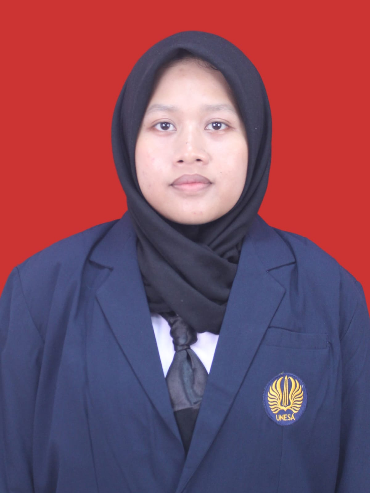

Canva
Membuat desain visual, presentasi, dan kebutuhan konten secara kreatif.
HELLO, I'M
Mahasiswa Sistem Informasi Universitas Negeri Surabaya yang tertarik pada teknologi, desain, editing, dan pengembangan diri.

01 — ABOUT ME
Saya adalah mahasiswa S1 Sistem Informasi di Fakultas Teknik, Universitas Negeri Surabaya. Saya memiliki kemampuan komunikasi dan interaksi sosial yang baik, mudah beradaptasi, serta nyaman bekerja dalam tim.
Saya memiliki minat pada teknologi, editing, desain, dan organisasi. Saya juga senang mempelajari hal baru dan mengembangkan kemampuan secara bertahap.
Universitas Negeri Surabaya · Fakultas Teknik
Bojonegoro
02 — WHAT I CAN DO
Membuat desain visual, presentasi, dan kebutuhan konten secara kreatif.
Mengedit video dan mengembangkan konten visual dengan storytelling yang menarik.
Mudah bersosialisasi, membangun komunikasi, dan bekerja sama dengan orang lain.
Berpengalaman membantu pengelolaan jadwal, kegiatan, tata tertib, dan koordinasi.
03 — EXPERIENCE
Berpartisipasi dalam kegiatan organisasi di bidang komputer dan mendukung kegiatan yang berkaitan dengan penggunaan komputer.
Membantu menjaga tata tertib kegiatan, menyusun jadwal, dan berkoordinasi dengan penghuni asrama.
Mengatur jadwal kegiatan kebersihan serta membantu menjaga kedisiplinan dan ketertiban lingkungan asrama.
Mengikuti kegiatan secara tim dan mengembangkan kedisiplinan, komunikasi, serta kerja sama.
04 — ACHIEVEMENT
CERTIFICATE
Sertifikat Gemini Certified yang menunjukkan partisipasi dan pengakuan sebagai university student.
COMPETITION
Pengalaman mengikuti kompetisi infografis dan mengembangkan kemampuan visual, kreativitas, serta penyampaian informasi.
HIGH SCHOOL
Salah satu pencapaian yang diperoleh selama menempuh pendidikan SMA/MA.
05 — CONTACT
Terbuka untuk belajar, berkolaborasi, dan mendapatkan pengalaman baru. Jangan ragu untuk terhubung!